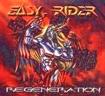

Home Artist links Label link

Easy Rider - Regeneration
| Artist: | Easy Rider |
| Title: | Regeneration |
| Label: | Locomotive Music LM085 |
| Length(s): | 57 minutes |
| Year(s) of release: | 2002 |
| Month of review: | [09/2002] |
Sample this album in MP3 or RealAudio
The music
Easy Rider present their fourth album Regeneration. It's a rather heavy album, bordering often on the style perfected by the Dio's and Ozzy's of this world. This is quite an okay album, in the genre, but I would say that the progressive content of it is rather thin. At times there are riffs that are just a tad more sophisticated than you would expect with hard rock, more prog metal-ish, with Freedom Fighter being even more or less progressive. At the end of the day, though, one has to feel that this is a hard rock release, more than anything else.
© Roberto Lambooy